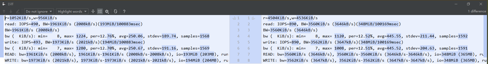

Performance test on Erasure Coded Block Storage
Create a EC pool
I use this manifest to create a EC pool.
kubectl apply -f storageclass-ec_customized.yamlCreate a PVC
Then create a PVC by this manifest.
kubectl apply -f test-pvc.yamlUse PVC in Deployment
Then redeploy the Toolbox, mounting a volume provided by the PVC.
kubectl apply -f toolbox_1.2_customized.yamlUse fio to test the EC block storage
Then you can enter the toolbox and use fio tool to test the performance.
fiocould be simply installed within the pod.
kubectl -n rook-ceph exec -it $(kubectl -n rook-ceph get pod -l "app=rook-ceph-tools" -o jsonpath='{.items[0].metadata.name}') bashtouch /tmp/ceph-rbd-ec-volume/test
fio -filename=/tmp/ceph-rbd-ec-volume/test -direct=1 -iodepth=128 -rw=randrw -ioengine=libaio -bs=4k -size=1G -numjobs=8 -runtime=100 -group_reporting -name=Rand_Write_TestingHere is the result.
[root@ip-10-30-0-205 ceph-rbd-ec-volume]# fio -filename=/tmp/ceph-rbd-ec-volume/test -direct=1 -iodepth=128 -rw=randrw -ioengine=libaio -bs=4k -size=1G -numjobs=8 -runtime=100 -group_reporting -name=Rand_Write_Testing
Rand_Write_Testing: (g=0): rw=randrw, bs=(R) 4096B-4096B, (W) 4096B-4096B, (T) 4096B-4096B, ioengine=libaio, iodepth=128
...
fio-3.7
Starting 8 processes
Rand_Write_Testing: Laying out IO file (1 file / 1024MiB)
Jobs: 8 (f=8): [m(8)][100.0%][r=1052KiB/s,w=956KiB/s][r=263,w=239 IOPS][eta 00m:00s]
Rand_Write_Testing: (groupid=0, jobs=8): err= 0: pid=686: Thu Mar 19 11:55:54 2020
read: IOPS=490, BW=1961KiB/s (2008kB/s)(193MiB/100883msec)
slat (usec): min=2, max=1296.3k, avg=8108.82, stdev=34428.80
clat (msec): min=5, max=4560, avg=890.89, stdev=614.82
lat (msec): min=5, max=4560, avg=899.00, stdev=619.60
clat percentiles (msec):
| 1.00th=[ 155], 5.00th=[ 211], 10.00th=[ 255], 20.00th=[ 376],
| 30.00th=[ 485], 40.00th=[ 584], 50.00th=[ 709], 60.00th=[ 885],
| 70.00th=[ 1116], 80.00th=[ 1385], 90.00th=[ 1720], 95.00th=[ 2056],
| 99.00th=[ 2970], 99.50th=[ 3171], 99.90th=[ 3540], 99.95th=[ 3708],
| 99.99th=[ 4245]
bw ( KiB/s): min= 8, max= 1224, per=12.76%, avg=250.06, stdev=189.74, samples=1568
iops : min= 2, max= 306, avg=62.47, stdev=47.44, samples=1568
write: IOPS=493, BW=1973KiB/s (2021kB/s)(194MiB/100883msec)
slat (usec): min=3, max=1285.1k, avg=8024.51, stdev=34210.52
clat (msec): min=26, max=5560, avg=1172.19, stdev=783.87
lat (msec): min=26, max=5560, avg=1180.22, stdev=788.17
clat percentiles (msec):
| 1.00th=[ 207], 5.00th=[ 279], 10.00th=[ 347], 20.00th=[ 493],
| 30.00th=[ 651], 40.00th=[ 785], 50.00th=[ 953], 60.00th=[ 1183],
| 70.00th=[ 1469], 80.00th=[ 1804], 90.00th=[ 2232], 95.00th=[ 2735],
| 99.00th=[ 3574], 99.50th=[ 3842], 99.90th=[ 4329], 99.95th=[ 4597],
| 99.99th=[ 5134]
bw ( KiB/s): min= 7, max= 1280, per=12.70%, avg=250.67, stdev=191.16, samples=1569
iops : min= 1, max= 320, avg=62.62, stdev=47.79, samples=1569
lat (msec) : 10=0.01%, 20=0.02%, 50=0.01%, 100=0.06%, 250=6.04%
lat (msec) : 500=19.84%, 750=19.18%, 1000=13.61%
cpu : usr=0.06%, sys=0.21%, ctx=23443, majf=0, minf=100
IO depths : 1=0.1%, 2=0.1%, 4=0.1%, 8=0.1%, 16=0.1%, 32=0.3%, >=64=99.5%
submit : 0=0.0%, 4=100.0%, 8=0.0%, 16=0.0%, 32=0.0%, 64=0.0%, >=64=0.0%
complete : 0=0.0%, 4=100.0%, 8=0.0%, 16=0.0%, 32=0.0%, 64=0.0%, >=64=0.1%
issued rwts: total=49451,49772,0,0 short=0,0,0,0 dropped=0,0,0,0
latency : target=0, window=0, percentile=100.00%, depth=128
Run status group 0 (all jobs):
READ: bw=1961KiB/s (2008kB/s), 1961KiB/s-1961KiB/s (2008kB/s-2008kB/s), io=193MiB (203MB), run=100883-100883msec
WRITE: bw=1973KiB/s (2021kB/s), 1973KiB/s-1973KiB/s (2021kB/s-2021kB/s), io=194MiB (204MB), run=100883-100883msec
Disk stats (read/write):
rbd0: ios=49447/49721, merge=1/44, ticks=5840992/19554655, in_queue=25345828, util=33.23%Performance test on Replicated Block Storage
Create a Replicated pool
I use this manifest to create the Replicated block pool.
kubectl apply -f storageclass_1.2_replicated_customized.yamlCreate a PVC and use it in Deployment with the same method mentioned above.
Change the name of PVC and StorageClass accordingly.
kubectl apply -f test-pvc.yaml
kubectl apply -f toolbox_1.2_customized.yamlUse fio to test the Replicated Block storage
[root@ip-10-30-0-174 /]# touch /tmp/ceph_rbd_replicated_test_volume/replicated_block_test.tmp
[root@ip-10-30-0-174 /]# which fio
/usr/bin/which: no fio in (/usr/local/sbin:/usr/local/bin:/usr/sbin:/usr/bin:/sbin:/bin)
[root@ip-10-30-0-174 /]# yum install fio
Failed to set locale, defaulting to C
Loaded plugins: fastestmirror, ovl
Determining fastest mirrors
...omitted here...
Installed:
fio.x86_64 0:3.7-1.el7
Dependency Installed:
daxctl-libs.x86_64 0:64.1-2.el7 libpmem.x86_64 0:1.5.1-2.1.el7 libpmemblk.x86_64 0:1.5.1-2.1.el7 ndctl-libs.x86_64 0:64.1-2.el7 numactl-libs.x86_64 0:2.0.12-3.el7_7.1
Complete!
[root@ip-10-30-0-174 ceph_rbd_replicated_test_volume]# fio -filename=/tmp/ceph_rbd_replicated_test_volume/replicated_block_test.tmp -direct=1 -iodepth=128 -rw=randrw -ioengine=libaio -bs=4k -size=8G -numjobs=8 -runtime=100 -group_reporting -name=Rand_Write_Testing
Rand_Write_Testing: (g=0): rw=randrw, bs=(R) 4096B-4096B, (W) 4096B-4096B, (T) 4096B-4096B, ioengine=libaio, iodepth=128
...
fio-3.7
Starting 8 processes
Rand_Write_Testing: Laying out IO file (1 file / 8192MiB)
Jobs: 8 (f=8): [m(8)][100.0%][r=4504KiB/s,w=4536KiB/s][r=1126,w=1134 IOPS][eta 00m:00s]
Rand_Write_Testing: (groupid=0, jobs=8): err= 0: pid=2058: Mon Mar 23 08:13:04 2020
read: IOPS=890, BW=3560KiB/s (3646kB/s)(348MiB/100169msec)
slat (usec): min=3, max=759415, avg=4397.68, stdev=19203.03
clat (msec): min=2, max=3702, avg=500.83, stdev=322.63
lat (msec): min=2, max=3719, avg=505.22, stdev=324.59
clat percentiles (msec):
| 1.00th=[ 167], 5.00th=[ 222], 10.00th=[ 255], 20.00th=[ 305],
| 30.00th=[ 338], 40.00th=[ 372], 50.00th=[ 405], 60.00th=[ 447],
| 70.00th=[ 506], 80.00th=[ 609], 90.00th=[ 860], 95.00th=[ 1183],
| 99.00th=[ 1770], 99.50th=[ 2072], 99.90th=[ 2769], 99.95th=[ 3071],
| 99.99th=[ 3507]
bw ( KiB/s): min= 8, max= 1120, per=12.52%, avg=445.55, stdev=211.44, samples=1592
iops : min= 2, max= 280, avg=111.33, stdev=52.87, samples=1592
write: IOPS=890, BW=3562KiB/s (3647kB/s)(348MiB/100169msec)
slat (usec): min=5, max=857972, avg=4564.23, stdev=19536.89
clat (msec): min=4, max=4155, avg=638.70, stdev=385.95
lat (msec): min=4, max=4155, avg=643.27, stdev=387.54
clat percentiles (msec):
| 1.00th=[ 211], 5.00th=[ 279], 10.00th=[ 326], 20.00th=[ 384],
| 30.00th=[ 430], 40.00th=[ 481], 50.00th=[ 531], 60.00th=[ 592],
| 70.00th=[ 667], 80.00th=[ 793], 90.00th=[ 1099], 95.00th=[ 1452],
| 99.00th=[ 2165], 99.50th=[ 2500], 99.90th=[ 3138], 99.95th=[ 3373],
| 99.99th=[ 3742]
bw ( KiB/s): min= 7, max= 1008, per=12.51%, avg=445.52, stdev=204.63, samples=1591
iops : min= 1, max= 252, avg=111.32, stdev=51.17, samples=1591
lat (msec) : 4=0.01%, 10=0.01%, 20=0.01%, 50=0.01%, 100=0.06%
lat (msec) : 250=5.86%, 500=50.73%, 750=25.42%, 1000=8.22%
cpu : usr=0.10%, sys=0.34%, ctx=47997, majf=0, minf=262
IO depths : 1=0.1%, 2=0.1%, 4=0.1%, 8=0.1%, 16=0.1%, 32=0.1%, >=64=99.7%
submit : 0=0.0%, 4=100.0%, 8=0.0%, 16=0.0%, 32=0.0%, 64=0.0%, >=64=0.0%
complete : 0=0.0%, 4=100.0%, 8=0.0%, 16=0.0%, 32=0.0%, 64=0.0%, >=64=0.1%
issued rwts: total=89153,89189,0,0 short=0,0,0,0 dropped=0,0,0,0
latency : target=0, window=0, percentile=100.00%, depth=128
Run status group 0 (all jobs):
READ: bw=3560KiB/s (3646kB/s), 3560KiB/s-3560KiB/s (3646kB/s-3646kB/s), io=348MiB (365MB), run=100169-100169msec
WRITE: bw=3562KiB/s (3647kB/s), 3562KiB/s-3562KiB/s (3647kB/s-3647kB/s), io=348MiB (365MB), run=100169-100169msec
Disk stats (read/write):
rbd0: ios=89146/89153, merge=1/16, ticks=6813188/18485213, in_queue=12813419, util=100.00%
Performance test on host
TL;DR
[root@ip-10-30-0-174 ~]# df -Th /data
Filesystem Type Size Used Avail Use% Mounted on
/dev/sdb1 xfs 16G 2.8G 14G 18% /data
[root@ip-10-30-0-174 ~]# fio -filename=/data/xfs_fio_test.tmp -direct=1 -iodepth=128 -rw=randrw -ioengine=libaio -bs=4k -size=8G -numjobs=8 -runtime=100 -group_reporting -name=Rand_Write_Testing
Rand_Write_Testing: (g=0): rw=randrw, bs=(R) 4096B-4096B, (W) 4096B-4096B, (T) 4096B-4096B, ioengine=libaio, iodepth=128
...
fio-3.7
Starting 8 processes
Rand_Write_Testing: Laying out IO file (1 file / 8192MiB)
Jobs: 8 (f=8): [m(8)][100.0%][r=13.4MiB/s,w=13.4MiB/s][r=3434,w=3432 IOPS][eta 00m:00s]
Rand_Write_Testing: (groupid=0, jobs=8): err= 0: pid=11598: Mon Mar 23 16:05:17 2020
read: IOPS=3361, BW=13.1MiB/s (13.8MB/s)(1315MiB/100153msec)
slat (usec): min=3, max=402473, avg=1075.48, stdev=6513.03
clat (usec): min=925, max=1970.6k, avg=171791.88, stdev=108593.36
lat (usec): min=931, max=1970.7k, avg=172867.62, stdev=108897.86
clat percentiles (msec):
| 1.00th=[ 51], 5.00th=[ 66], 10.00th=[ 79], 20.00th=[ 96],
| 30.00th=[ 111], 40.00th=[ 126], 50.00th=[ 142], 60.00th=[ 163],
| 70.00th=[ 188], 80.00th=[ 230], 90.00th=[ 300], 95.00th=[ 372],
| 99.00th=[ 592], 99.50th=[ 718], 99.90th=[ 953], 99.95th=[ 1045],
| 99.99th=[ 1250]
bw ( KiB/s): min= 56, max= 3688, per=12.50%, avg=1680.24, stdev=550.35, samples=1600
iops : min= 14, max= 922, avg=420.04, stdev=137.58, samples=1600
write: IOPS=3354, BW=13.1MiB/s (13.7MB/s)(1312MiB/100153msec)
slat (usec): min=4, max=456740, avg=1297.14, stdev=7098.63
clat (usec): min=871, max=777913, avg=130293.71, stdev=64597.51
lat (usec): min=877, max=778115, avg=131591.15, stdev=65089.13
clat percentiles (msec):
| 1.00th=[ 46], 5.00th=[ 60], 10.00th=[ 69], 20.00th=[ 83],
| 30.00th=[ 94], 40.00th=[ 105], 50.00th=[ 115], 60.00th=[ 127],
| 70.00th=[ 142], 80.00th=[ 167], 90.00th=[ 215], 95.00th=[ 255],
| 99.00th=[ 355], 99.50th=[ 380], 99.90th=[ 609], 99.95th=[ 676],
| 99.99th=[ 751]
bw ( KiB/s): min= 56, max= 3848, per=12.50%, avg=1677.35, stdev=558.50, samples=1600
iops : min= 14, max= 962, avg=419.32, stdev=139.62, samples=1600
lat (usec) : 1000=0.01%
lat (msec) : 2=0.01%, 10=0.01%, 20=0.01%, 50=1.35%, 100=27.53%
lat (msec) : 250=60.19%, 500=9.97%, 750=0.72%, 1000=0.18%
cpu : usr=0.29%, sys=1.46%, ctx=689469, majf=0, minf=267
IO depths : 1=0.1%, 2=0.1%, 4=0.1%, 8=0.1%, 16=0.1%, 32=0.1%, >=64=99.9%
submit : 0=0.0%, 4=100.0%, 8=0.0%, 16=0.0%, 32=0.0%, 64=0.0%, >=64=0.0%
complete : 0=0.0%, 4=100.0%, 8=0.0%, 16=0.0%, 32=0.0%, 64=0.0%, >=64=0.1%
issued rwts: total=336703,335963,0,0 short=0,0,0,0 dropped=0,0,0,0
latency : target=0, window=0, percentile=100.00%, depth=128
Run status group 0 (all jobs):
READ: bw=13.1MiB/s (13.8MB/s), 13.1MiB/s-13.1MiB/s (13.8MB/s-13.8MB/s), io=1315MiB (1379MB), run=100153-100153msec
WRITE: bw=13.1MiB/s (13.7MB/s), 13.1MiB/s-13.1MiB/s (13.7MB/s-13.7MB/s), io=1312MiB (1376MB), run=100153-100153msec
Disk stats (read/write):
sdb: ios=336432/335776, merge=0/1, ticks=14384038/863203, in_queue=15265429, util=100.00%
Test Pod network’s bandwidth
Create first pod to serve on port 3390
cat<<EOF | kubectl apply -f -
apiVersion: v1
kind: Pod
metadata:
name: busybox
namespace: default
spec:
containers:
- name: busybox
image: harbor.sunvalley.com.cn/library/centos:zhangguanzhang
command:
- sleep
- "3600"
imagePullPolicy: IfNotPresent
restartPolicy: Always
EOFkubectl exec -ti busybox bash[root@busybox /]# iperf3 -s -p 3390
-----------------------------------------------------------
Server listening on 3390
-----------------------------------------------------------Create second pod to send packets to the first pod
cat<<EOF | kubectl apply -f -
apiVersion: v1
kind: Pod
metadata:
name: busybox2
namespace: default
spec:
containers:
- name: busybox
image: harbor.sunvalley.com.cn/library/centos:zhangguanzhang
command:
- sleep
- "3600"
imagePullPolicy: IfNotPresent
restartPolicy: Always
EOFThrough the following command, we know that the IP of Pod1 is 10.200.0.193.
[root@datateam-k8s-control-plane-01 ceph]# kubectl get pod busybox -o wide
NAME READY STATUS RESTARTS AGE IP NODE NOMINATED NODE READINESS GATES
busybox 1/1 Running 3 3h42m 10.200.0.193 ip-10-20-1-84 <none> <none>kubectl exec -ti busybox2 bash[root@busybox2 /]# iperf3 -c 10.200.0.193 -p 3390
Connecting to host 10.200.0.193, port 3390
[ 4] local 10.200.0.75 port 44990 connected to 10.200.0.193 port 3390
[ ID] Interval Transfer Bandwidth Retr Cwnd
[ 4] 0.00-1.00 sec 108 MBytes 909 Mbits/sec 59 180 KBytes
[ 4] 1.00-2.00 sec 108 MBytes 905 Mbits/sec 8 279 KBytes
[ 4] 2.00-3.00 sec 106 MBytes 892 Mbits/sec 25 214 KBytes
[ 4] 3.00-4.00 sec 104 MBytes 875 Mbits/sec 23 221 KBytes
[ 4] 4.00-5.00 sec 106 MBytes 886 Mbits/sec 48 160 KBytes
[ 4] 5.00-6.00 sec 108 MBytes 902 Mbits/sec 24 247 KBytes
[ 4] 6.00-7.00 sec 102 MBytes 860 Mbits/sec 9 192 KBytes
[ 4] 7.00-8.00 sec 103 MBytes 866 Mbits/sec 25 308 KBytes
[ 4] 8.00-9.00 sec 107 MBytes 901 Mbits/sec 85 203 KBytes
[ 4] 9.00-10.00 sec 106 MBytes 890 Mbits/sec 16 302 KBytes
- - - - - - - - - - - - - - - - - - - - - - - - -
[ ID] Interval Transfer Bandwidth Retr
[ 4] 0.00-10.00 sec 1.03 GBytes 889 Mbits/sec 322 sender
[ 4] 0.00-10.00 sec 1.03 GBytes 887 Mbits/sec receiver
iperf Done.
Conclusion
My environment spec
- Ceph cluster deployed in K8s.
- Using Calico as CNI and enabled IPIP mode.
- Using bluStore as storeType.
- Backend hardware of Ceph block is HDD.
The transfer speed of the Replicated block is about twice the speed of the EC block.
Please see this comparison chart.

The file system on the host is 3.75 times faster than the Replicated block.